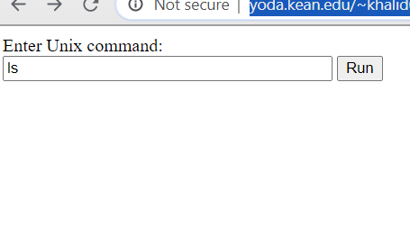
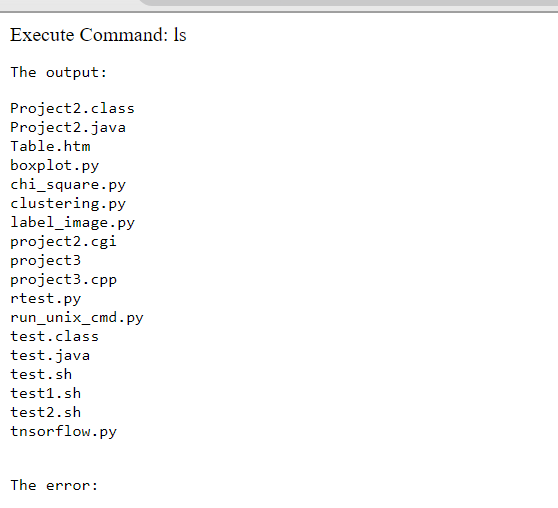

Run a Unix Command
A web page name “run_unix.html” will be shown for the user to run a Unix command. Page have a text input field and a “run” button
When the “run” button is clicked, a Python program named “run_linux _cmd.py” should get the input statement from the web browser and execute it. and display the output or message returned from the Linux server on the browser. The command statement could be like “ls -la /var/log/http/error”, “date”, “chmod 705 /home/”, “df -h”, etc.A program should display the results, output and error message when the input statement is executed on the Linux server. The output could be more than one row, e.g “df -h”.
